Paper Town: a second plan
The same careful maths as the first plan, in a completely different world: everything is made of paper, on a big craft table. New friends are folded from paper, the child is a paper doll, and every day a letter asks for help. The child's maths makes what the letter asks for, the finished work becomes an event, and a new piece goes into the child's own paper town. For speed, a paper band plays faster as the child answers well.
A little town made of paper

✋ Made to be touched
Paper asks to be folded, torn, pulled, lifted, stamped and woven. Each of those moves is a piece of maths, so children do the maths with their hands.
🧷 Easy to bring to life
A paper doll moves on split pins; an origami animal bends along its own creases. Both are simple to animate, and nothing has to be drawn frame by frame.
🪶 Light and different
Flat layers, one shared paper texture and a few colours keep it light on phones. And no maths app looks like this.
Cut paper, folds, tape and stamps
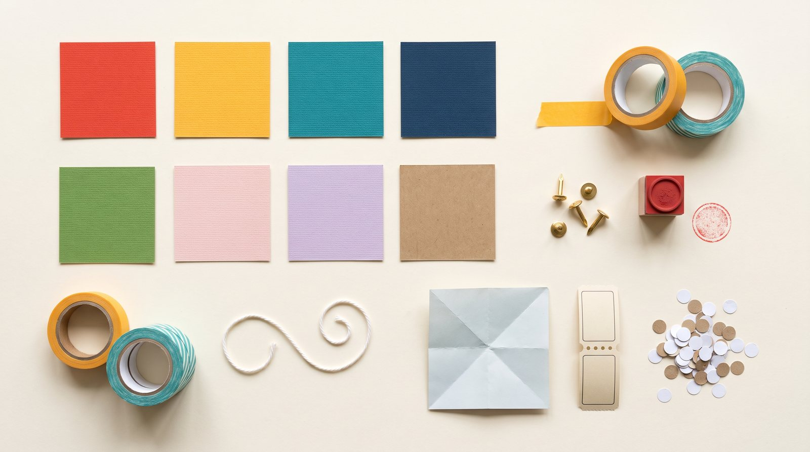
#E4573D
#F2B33D
#1E9488
#23325C
#5A9E4B
#F3B0A6
#B8A5DA
#C7A06F
#F8F1E3
#2A3032
Headings in Bricolage Grotesque, reading in Atkinson Hyperlegible (made to be easy to read), numbers in Lexend (a plain round 0, the way children write it). Numbers always sit on plain warm paper, never on texture. Ages 9–10 get a quieter paper desk, with about three quarters of the screen left for the maths.
A paper doll and six folded friends
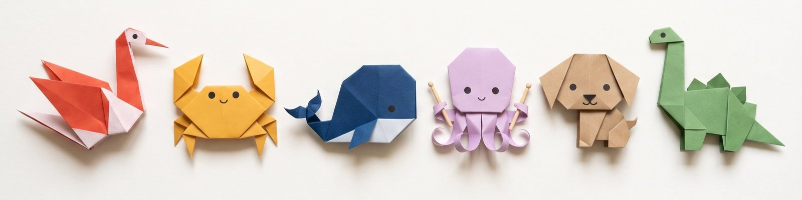
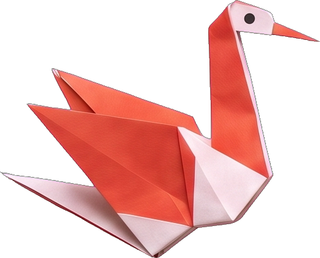
Tavu, the crane
Careful and curious. Brings the letter every morning.
Leads: order, patterns, time.
Signature move: opens both wings like the pages of a book.
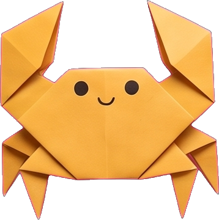
Kebu, the crab
Precise and patient; loves neat work.
Leads: equal parts, number bonds, fractions.
Signature move: claws that close like scissors.
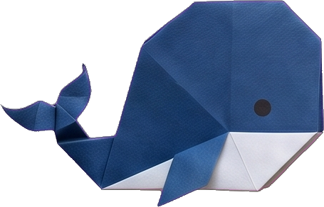
Welu, the whale
Gentle and steady.
Leads: big numbers, place value, measuring.
Signature move: a tail that opens into a measuring fan.
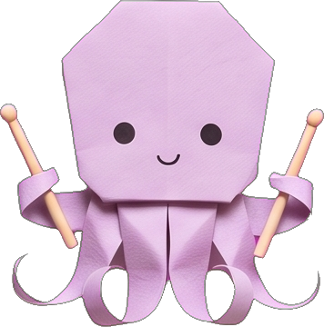
Ovu, the octopus
Loves a good rhythm. Plays the drums.
Leads: patterns, skip counting, number facts.
Signature move: eight arms, each with its own drumstick.
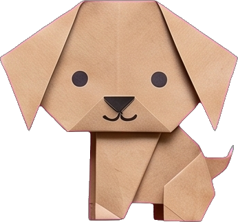
Nefu, the puppy
Keen, with time for every child. Helps the youngest.
Leads: counting, matching, comparing.
Signature move: one ear lifts, a tucked tail wags.
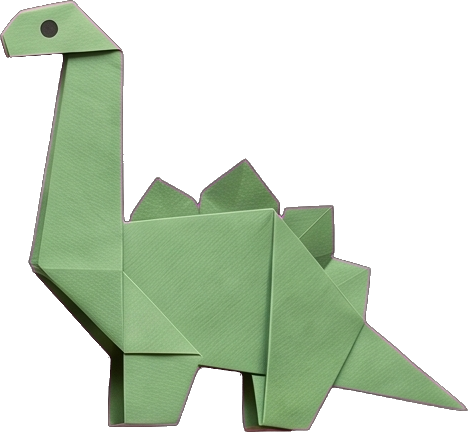
Zedu, the dinosaur
Builds carefully, then admires the result.
Leads: shapes, symmetry, arrays, area.
Signature move: a pleated neck that rises up.
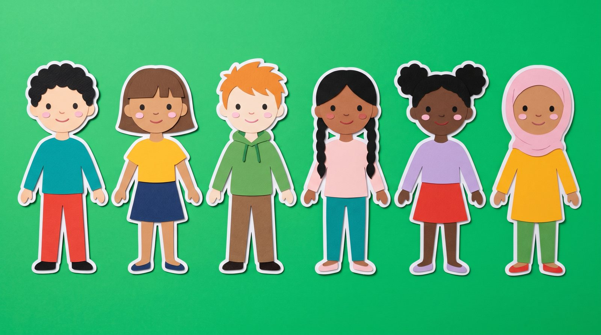
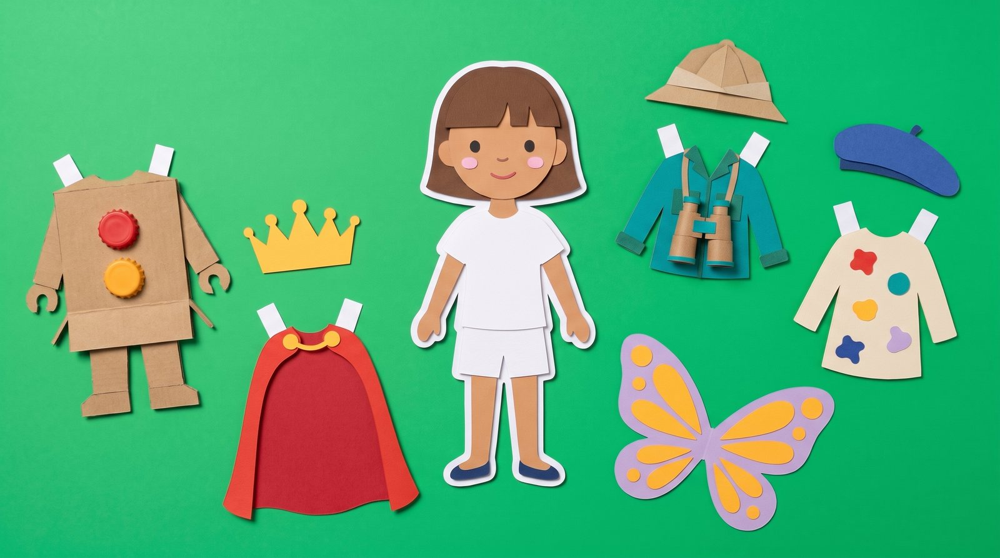
A letter, not a road
Every morning Tavu brings one envelope with a request from a friend. Three short jobs (a review, today's new step and a practice) make the missing pieces, and the Proof Press, the daily challenge, prints the poster: ten panels, the later ones worth more, and the collectible is the child's own printed sheet. Then the event plays with the child's work in it, and a piece goes into their town. About 9 minutes at 3–4, 11 at 5–8, 13 at 9–10.
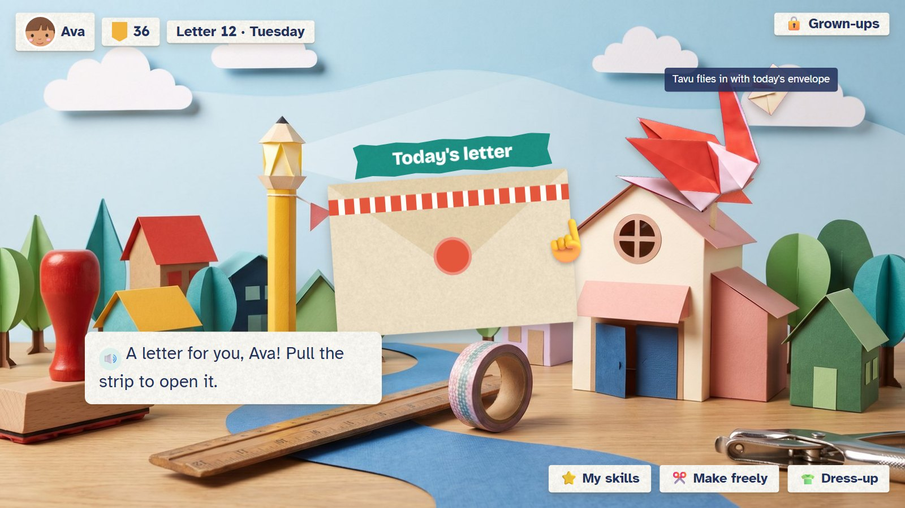
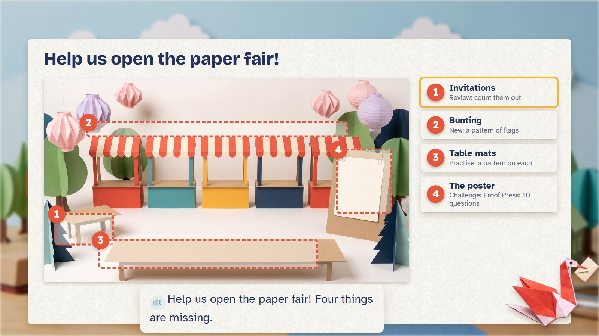
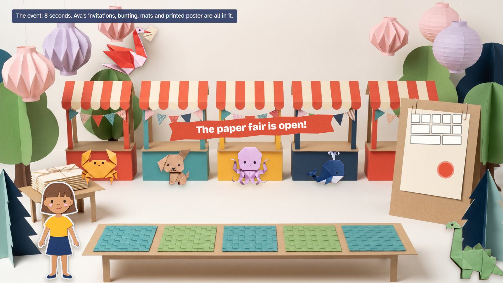
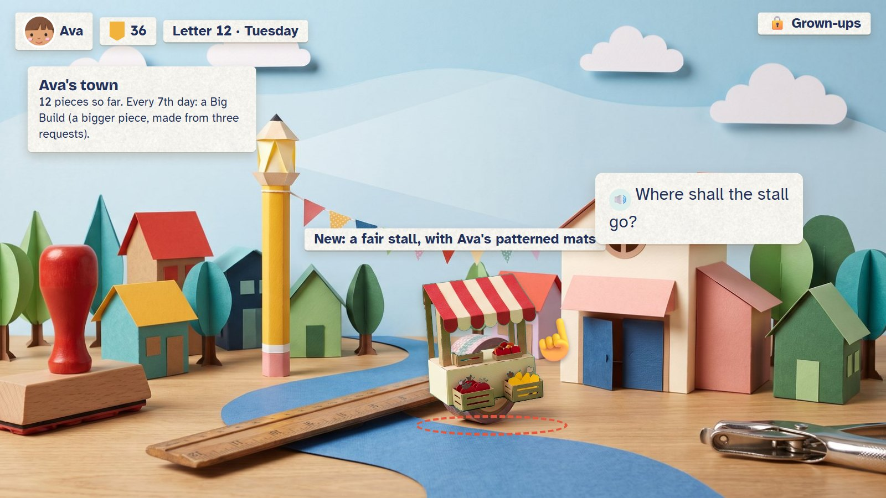
The whole day, moment by moment, the Proof Press and the town →
The Band: speed you can hear
Ovu keeps the beat; the child answers facts they already know. Five right in a row and the music speeds up and a friend joins. A miss never stops the song. The child's speed is the tempo they reach ("you played at 64 beats"), never a rank. Under 8 there is no clock: the band follows the child, one bar per answer.


Sixteen paper moves, each a piece of maths
Every move also works with simple taps, for small hands or children who find gestures hard; both earn the same. A gesture may help place a piece neatly, but never chooses the right fold, amount or place. Details are on the technical page.
Six activities, each with a storyboard
One for each age from 3 to 10: counting, shapes, adding and taking away, multiplication, symmetry and fractions. Each page has six moments (one of them a wrong try), the five rounds exactly, the mistakes we expect, and what it needs.
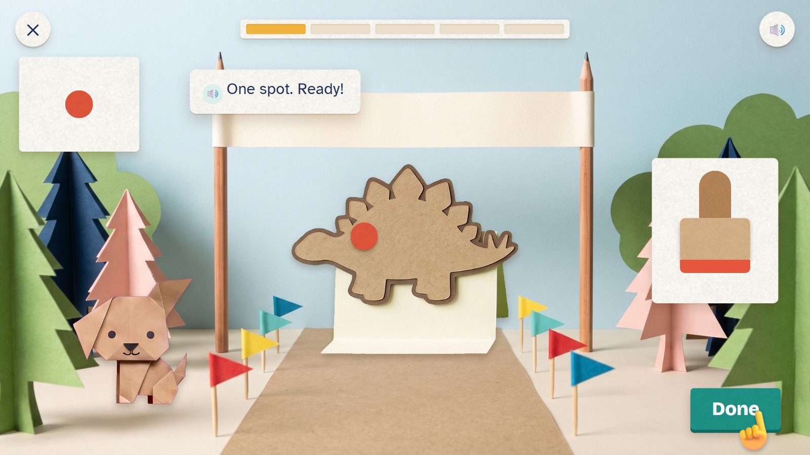
Dino Spots
Five plain paper dinosaurs are getting ready for a parade, and each one needs its spots.
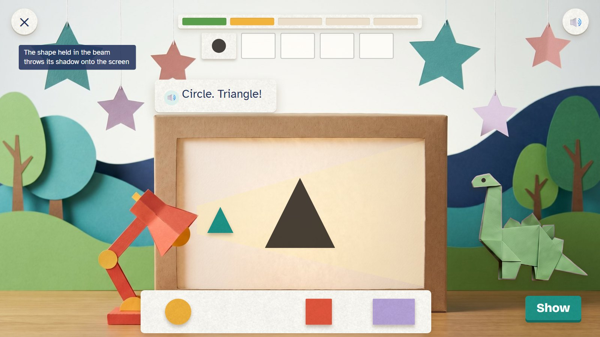
Shadow Theatre
Zedu is putting on a shadow show.

Tear-off Tickets
Five booths at the paper fair need their tickets.

Weave Mats
Ovu's band needs mats for its stage.

Folded Lantern Tower
Zedu is building a tower of paper lanterns, and each lantern needs a window.

Fold-a-Fraction
Welu is making a ribbon of fraction panels for the town display.
Paper tabs, a Printbook and a town
| Done | Paper tabs | Limit |
|---|---|---|
| An activity (5 rounds) | 4 | five paid a day |
| The whole letter | +4 | once a day |
| The Proof Press (finished, any score) | 8 | once a day, plus the day's print |
| A warm-up game | 4 | once a day |
| The weekly Big Build | 0 | its big town piece is the reward |
A full day earns 28 tabs (24 without the warm-up, 36 at most). Tabs buy clothes for the doll: 60 at launch, 12 of them free, 48 to buy at 8, 16 or 32 tabs, so a first item costs two activities. Skin, hair and face are always free. Stamps (one for each paper move, earned the first time it is used), stickers (pick one after an activity), the Printbook of daily prints and the town pieces cost nothing. No mystery boxes, nothing expires, and nothing bought makes the maths easier.
A three-week preview first
| Week | What |
|---|---|
| 1 | The paper working surface, the doll, Nefu and Tavu, the envelope, and Dino Spots, with real tips, worked steps, fresh twins and saved progress. |
| 2 | Shadow Theatre, Tear-off Tickets and the ten-panel Proof Press; one 8-second event made from the child's work; three town pieces; 12 free clothes; a parents' view. |
| 3 | Ovu and the Band (untimed, plus 45 seconds from age 8); tap-only controls, left-handed layout, sound switches, narrow phones; one Big Build. Then six children try it: two aged 3–4, two 5–6, two 8–10. |
| First plan's preview | This plan's preview | What the pair would show |
|---|---|---|
| Pancake Café | Dino Spots | the same counting skill: flipping pancakes or stamping spots |
| Balloon Tower | Shadow Theatre | shapes by their sides and corners, or by turning them in a beam |
| Caterpillar Bridges | Tear-off Tickets | joining and taking away with living numbers or with tickets |
| A road of five stops | A letter, the Proof Press, an event and a town piece | which day feels more like making something |
| (speed not in the preview) | The Band | whether music helps quick, accurate facts |
A guess, for one developer with an artist supplying the paper parts in the first three days.
Questions
- The look: paper and origami on a craft table. Do you like it more or less than the first plan's flat style?
- The characters: the paper doll and Tavu, Kebu, Welu, Ovu, Nefu and Zedu. Keep, change or add? Are the names easy to say?
- The day: one letter whose jobs build an event and a town piece, instead of a road of stops. Better?
- The daily challenge: the Proof Press (ten panels, 17 points, the child's own printed sheet as the collectible)?
- Speed: the Band as the main speed game, with a tempo instead of a time and no clock under 8? (its page)
- Hands-on: the sixteen paper moves, each with a tap-only way. Too many, too few?
- The activities: which do you like, and what would you change? (Each page has one more question.)
- Rewards: paper tabs, 60 clothes, stamps, stickers, the Printbook and the town. Right amounts?
- Which plan: the first, this one, or a mix (for example, this look and day with some of the first plan's activities)?
- First step: the three-week preview of this plan, the first plan's, or one of each to compare with children?
13 Oct 2026 · E:\work\new-math-app. Pictures are drafts made with Gemini; storyboards and mock-ups are HTML
(docs/plan/second-plan/mock/). The technical page has the rigs, timings, tap-only moves and risks.